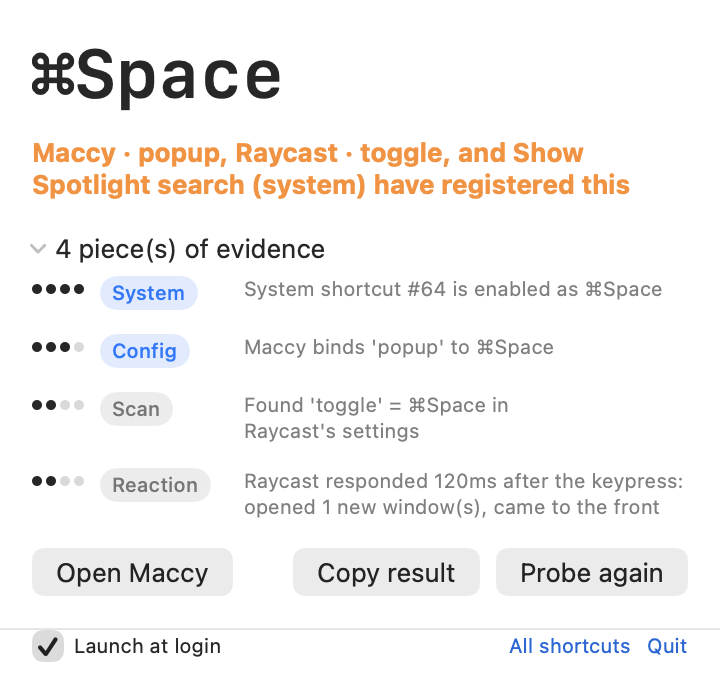
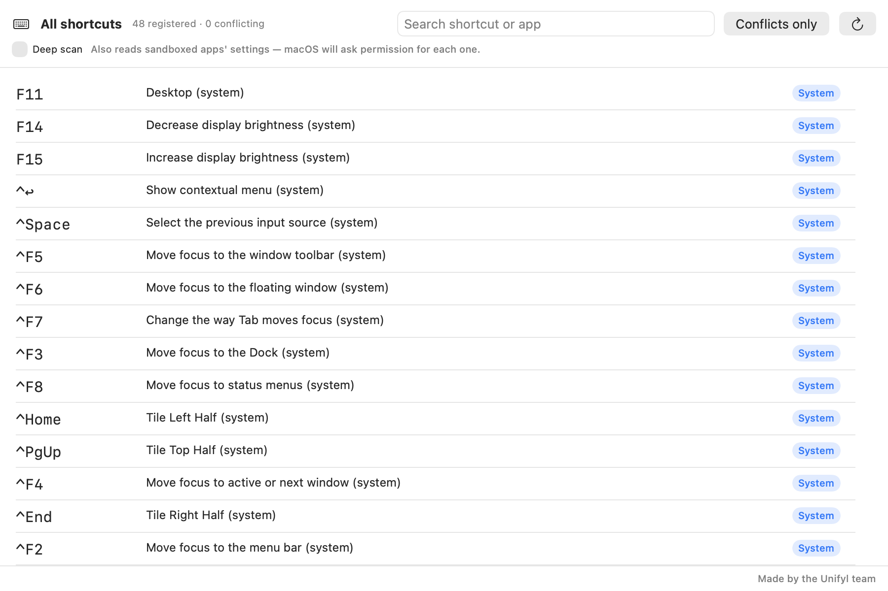

You press ⇧⌘4 and nothing happens. Some app took it — but which one? macOS ships no API that answers this, and no way to ask in System Settings either.

Press the combination. Get an answer — and the reasoning behind it.
There is no single source of truth for “who owns this shortcut,” so the app collects independent signals and tells you which one it is leaning on.
Reads macOS’s own shortcut table — the authoritative one behind System Settings — and the overrides you have made to it.
CertainParses the settings files of apps it knows, so it can name the exact action — not just the app.
High — lower when the app isn’t runningRecognizes two common shortcut-storage formats in any app’s settings, so unfamiliar apps are not automatically invisible.
MediumWatches what actually happens after the keypress — an app opening a window or coming to the front within milliseconds.
Observation, never a claimAsks the Carbon hotkey API whether the combination is already spoken for. Honest about its ceiling — see the limits below.
Observation onlyEvery claim shows the evidence it rests on, so you can judge the answer yourself rather than trusting a black box.
Five outcomes — see belowA shortcut is rarely a clean yes or no. The verdict says how sure it is.
An authoritative source binds this combination. The system table said so, or a known app’s settings did while the app is running.
The evidence points one way but does not settle it — a scan match, or an app that reacted without a registration to back it up.
Two or more owners registered the same combination. This is the case you came here for, and it is pinned to the top of the inventory.
Something holds it, but nothing identified who. Rare in practice — the limits section explains why.
Nothing found. Safe to assign — with the same caveat as above.
A reaction proves an app received the key. It does not prove the app registered it. So a reaction can corroborate an owner — but it can never contest one.
Without that rule, ⌘Space reads as “the system and Spotlight are fighting” when nothing is wrong at all: Spotlight is simply what the system shortcut opens. Getting this backwards is what makes a conflict detector cry wolf, and it is the reason every verdict here shows its sources instead of a single confident sentence.
Beyond one-shot probing, the app lists every shortcut it can see — system bindings, known apps and scan results — with conflicts pinned to the top.

Search by combination or app. Deep scan additionally reads sandboxed apps’ settings — macOS asks permission per app, so it is off by default.
Short version: watches one, keeps one, sends none.
There is no network code in the repository. Nothing is uploaded, because nothing can be.
The keyboard tap is listen-only. Keys are observed, never intercepted — the real owner still receives them. That is exactly how reaction detection works.
Nothing is logged or stored. The only key data that survives a probe is the single combination you chose to look up.
Permissions are explained, not demanded. The probe needs Accessibility and Input Monitoring, because macOS requires both for a listen-only tap.
It still works without them. In limited mode you pick a combination manually and it answers from settings files alone.
The source is public. MIT licensed — every claim on this page is checkable.
A detector that hides its blind spots is worse than no detector.
RegisterEventHotKey reports a conflict only within the calling process, which
makes the “occupied but unidentified” verdict effectively unreachable. An app that registers
a hotkey, shows no window, and stores its config in an unrecognized format stays invisible.
macOS keeps its own translations somewhere we cannot read. Inventing replacements would disagree with what you see in System Settings, so the original English name is shown instead.
The KeyboardShortcuts library and MASShortcut-style dictionaries.
Apps with custom formats need a dedicated parser —
contributions welcome.
Requires macOS 14 or later. Free, and there is nothing to unlock.
There is no in-app updater, so this is the path that keeps you current — brew upgrade does the rest.
brew install --cask \
goodbug89/tap/hotkey-detectiveA notarized disk image, about a megabyte. Open it and drag the app to Applications.
Latest release →Signs with your own Developer ID if the keychain has one, ad-hoc otherwise.
git clone https://github.com/\
goodbug89/hotkey-detective.git
cd hotkey-detective
Scripts/bundle.shThe interface follows your system language. No setting to find.